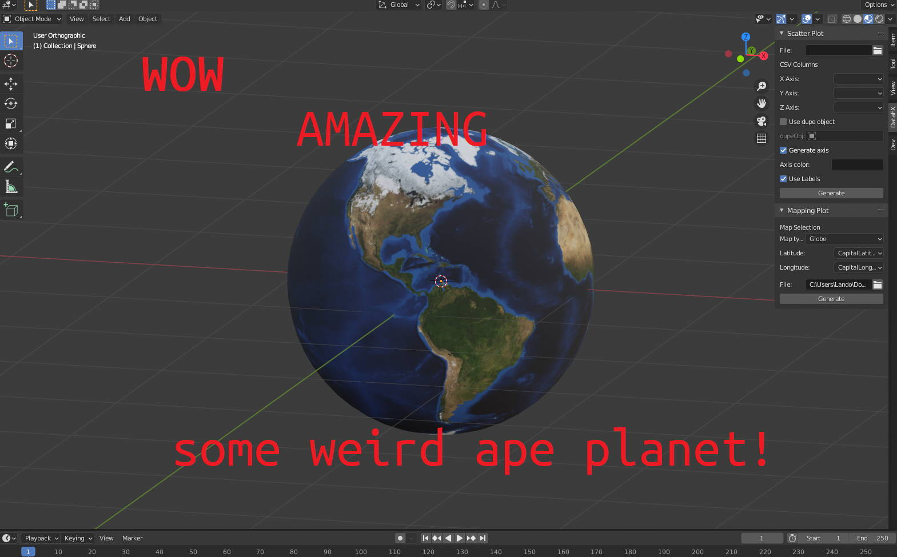
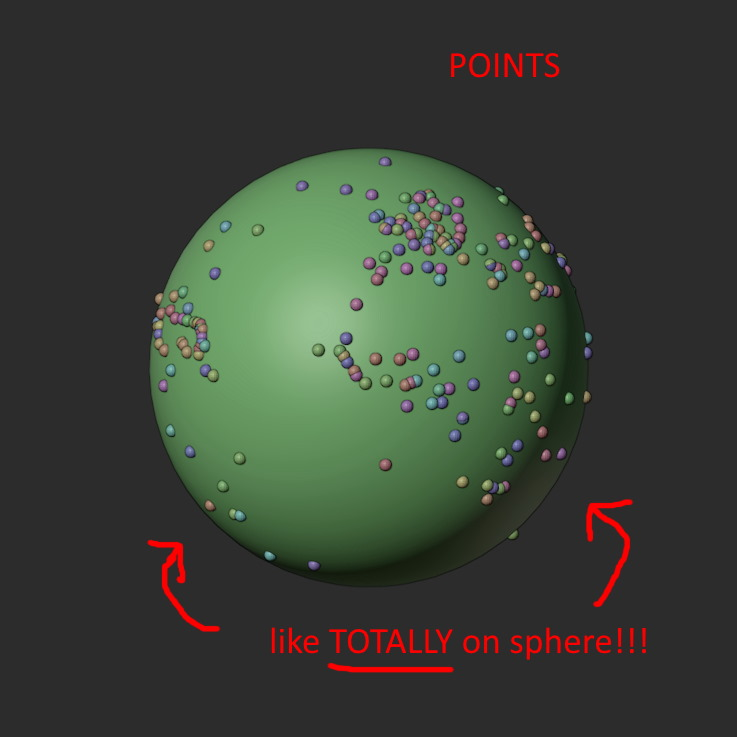
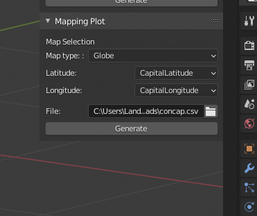

Geographic Coordinates to a 3D Sphere
I had the idea to add support for longitude and latitude values for my Blender3d addon, Data-FX. The idea is to allow people to select their lon/lat values from a CSV file and have the program plot them onto a 3D sphere. (Or any other 3d representation of a map really but for now a sphere)
This seemed like an interesting challenge – I attempted to plot some points around a globe.
Making Earth
First, lets generate a sphere and slap on a picture of mother earth courtesy of NASA.

|
|
Here we define a function that generates our world and applies the material. Blender’s node system makes our python code here a bit messy but makes it nice and customizable in Blender for the user.
How to Stick Points on a Sphere
Now the thing about spheres is that they’re round.
Lucky for us, longitude and latitude are just spherical coordinates(phi/theta/rho). We just have to convert them to Blender’s cartesian XYZ coordinate system. I have no clue how to do this but luckily wikipedia has the right idea.
According to the link, spherical coordinates can be converted to cartesian by the following math
// r is the radius of our sphere
X = r cos(phi) sin(theta)
Y = r sin(phi) sin(theta)
Z = r cos(theta)
With phi and theta being substituted for latitude and longitude our code looks something like this
|
|
The math here is swapped around so it works for my use case. If anyone wants to explain to me why cos(lat) and sin(lon) like how it’s defined doesn’t work here for X. But the calculation cos(lat) and cos(lon) works? I imagine it’s something to do with how I’m rotating the sphere or blender’s XYZ directions.
Actually, now that I’m thinking about it, I think Wikapedia just lists the inverse but I’m not sure.
Anyways. Points on a sphere!

Copy Paste UI
I ended up using a similar UI from the scatter plot code. This offers the same functionality as the scatter plot generation like file selection, auto-population for the header fields, and a generate button.
I also included a dropdown for other types of 3D maps I plan to add.

Results
I really like how this turned out. Simple but allows for a lot of customization and throwing together visualizations in a matter of seconds is a lot of fun! Cant wait to add more to Data-FX :)